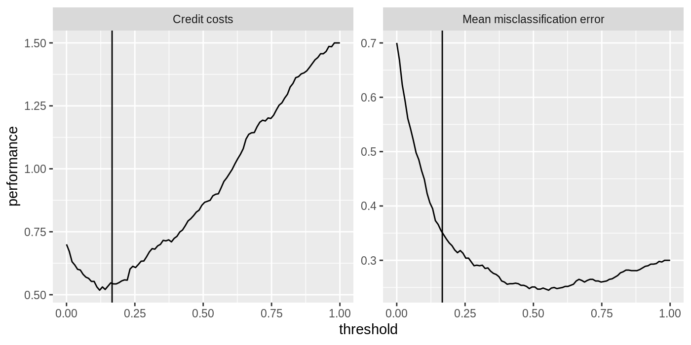

vignettes/tutorial/cost_sensitive_classif.Rmd
In regular classification the aim is to minimize the misclassification rate and thus all types of misclassification errors are deemed equally severe. A more general setting is cost-sensitive classification where the costs caused by different kinds of errors are not assumed to be equal and the objective is to minimize the expected costs.
In case of class-dependent costs the costs depend on the true and predicted class label. The costs \(c(k, l)\) for predicting class \(k\) if the true label is \(l\) are usually organized into a \(K \times K\) cost matrix where \(K\) is the number of classes. Naturally, it is assumed that the cost of predicting the correct class label \(y\) is minimal (that is \(c(y, y) \leq c(k, y)\) for all \(k = 1,\ldots,K\)).
A further generalization of this scenario are example-dependent misclassification costs where each example \((x, y)\) is coupled with an individual cost vector of length \(K\). Its \(k\)-th component expresses the cost of assigning \(x\) to class \(k\). A real-world example is fraud detection where the costs do not only depend on the true and predicted status fraud/non-fraud, but also on the amount of money involved in each case. Naturally, the cost of predicting the true class label \(y\) is assumed to be minimum. The true class labels are redundant information, as they can be easily inferred from the cost vectors. Moreover, given the cost vector, the expected costs do not depend on the true class label \(y\). The classification problem is therefore completely defined by the feature values \(x\) and the corresponding cost vectors.
In the following we show ways to handle cost-sensitive classification problems in mlr. Some of the functionality is currently experimental, and there may be changes in the future.
There are some classification methods that can accomodate misclassification costs directly. One example is rpart::rpart().
Alternatively, we can use cost-insensitive methods and manipulate the predictions or the training data in order to take misclassification costs into account. mlr supports thresholding and rebalancing.
Thresholding: The thresholds used to turn posterior probabilities into class labels are chosen such that the costs are minimized. This requires a Learner (makeLearner()) that can predict posterior probabilities. During training the costs are not taken into account.
Rebalancing: The idea is to change the proportion of the classes in the training data set in order to account for costs during training, either by weighting or by sampling. Rebalancing does not require that the Learner (makeLearner()) can predict probabilities.
For weighting we need a Learner (makeLearner()) that supports class weights or observation weights.
If the Learner (makeLearner()) cannot deal with weights the proportion of classes can be changed by over- and undersampling.
We start with binary classification problems and afterwards deal with multi-class problems.
The positive and negative classes are labeled \(1\) and \(-1\), respectively, and we consider the following cost matrix where the rows indicate true classes and the columns predicted classes:
| true/pred. | \(+1\) | \(-1\) |
| \(+1\) | \(c(+1,+1)\) | \(c(-1,+1)\) |
| \(-1\) | \(c(+1,-1)\) | \(c(-1,-1)\) |
Often, the diagonal entries are zero or the cost matrix is rescaled to achieve zeros in the diagonal (see for example O’Brien et al, 2008).
A well-known cost-sensitive classification problem is posed by the German Credit data set (caret::GermanCredit()) (see also the UCI Machine Learning Repository). The corresponding cost matrix (though Elkan (2001) argues that this matrix is economically unreasonable) is given as:
| true/pred. | Bad | Good |
| Bad | 0 | 5 |
| Good | 1 | 0 |
As in the table above, the rows indicate true and the columns predicted classes.
In case of class-dependent costs it is sufficient to generate an ordinary ClassifTask (Task()). A CostSensTask (Task()) is only needed if the costs are example-dependent. In the R code below we create the ClassifTask (Task()), remove two constant features from the data set and generate the cost matrix. Per default, Bad is the positive class.
data(GermanCredit, package = "caret")
credit.task = makeClassifTask(data = GermanCredit, target = "Class")
credit.task = removeConstantFeatures(credit.task)
## Removing 2 columns: Purpose.Vacation,Personal.Female.Single
credit.task
## Supervised task: GermanCredit
## Type: classif
## Target: Class
## Observations: 1000
## Features:
## numerics factors ordered functionals
## 59 0 0 0
## Missings: FALSE
## Has weights: FALSE
## Has blocking: FALSE
## Has coordinates: FALSE
## Classes: 2
## Bad Good
## 300 700
## Positive class: Bad
costs = matrix(c(0, 1, 5, 0), 2)
colnames(costs) = rownames(costs) = getTaskClassLevels(credit.task)
costs
## Bad Good
## Bad 0 5
## Good 1 0We start by fitting a logistic regression model (nnet::multinom()) to the German Credit data set (caret::GermanCredit()) and predict posterior probabilities.
# Train and predict posterior probabilities
lrn = makeLearner("classif.multinom", predict.type = "prob", trace = FALSE)
mod = train(lrn, credit.task)
pred = predict(mod, task = credit.task)
pred
## Prediction: 1000 observations
## predict.type: prob
## threshold: Bad=0.50,Good=0.50
## time: 0.01
## id truth prob.Bad prob.Good response
## 1 1 Good 0.03525092 0.9647491 Good
## 2 2 Bad 0.63222363 0.3677764 Bad
## 3 3 Good 0.02807414 0.9719259 Good
## 4 4 Good 0.25182703 0.7481730 Good
## 5 5 Bad 0.75193275 0.2480673 Bad
## 6 6 Good 0.26230149 0.7376985 Good
## ... (#rows: 1000, #cols: 5)The default thresholds for both classes are 0.5. But according to the cost matrix we should predict class Good only if we are very sure that Good is indeed the correct label. Therefore we should increase the threshold for class Good and decrease the threshold for class Bad.
The theoretical threshold for the positive class can be calculated from the cost matrix as \[t^* = \frac{c(+1,-1) - c(-1,-1)}{c(+1,-1) - c(+1,+1) + c(-1,+1) - c(-1,-1)}.\] For more details see Elkan (2001).
Below the theoretical threshold for the German Credit data set (caret::GermanCredit()) is calculated and used to predict class labels. Since the diagonal of the cost matrix is zero the formula given above simplifies accordingly.
# Calculate the theoretical threshold for the positive class
th = costs[2,1]/(costs[2,1] + costs[1,2])
th
## [1] 0.1666667As you may recall you can change thresholds in mlr either before training by using the predict.threshold option of makeLearner() or after prediction by calling setThreshold() on the Prediction() object.
As we already have a prediction we use the setThreshold() function. It returns an altered Prediction() object with class predictions for the theoretical threshold.
# Predict class labels according to the theoretical threshold
pred.th = setThreshold(pred, th)
pred.th
## Prediction: 1000 observations
## predict.type: prob
## threshold: Bad=0.17,Good=0.83
## time: 0.01
## id truth prob.Bad prob.Good response
## 1 1 Good 0.03525092 0.9647491 Good
## 2 2 Bad 0.63222363 0.3677764 Bad
## 3 3 Good 0.02807414 0.9719259 Good
## 4 4 Good 0.25182703 0.7481730 Bad
## 5 5 Bad 0.75193275 0.2480673 Bad
## 6 6 Good 0.26230149 0.7376985 Bad
## ... (#rows: 1000, #cols: 5)In order to calculate the average costs over the entire data set we first need to create a new performance Measure (makeMeasure()). This can be done through function makeCostMeasure(). It is expected that the rows of the cost matrix indicate true and the columns predicted class labels.
credit.costs = makeCostMeasure(id = "credit.costs", name = "Credit costs", costs = costs,
best = 0, worst = 5)
credit.costs
## Name: Credit costs
## Performance measure: credit.costs
## Properties: classif,classif.multi,req.pred,req.truth,predtype.response,predtype.prob
## Minimize: TRUE
## Best: 0; Worst: 5
## Aggregated by: test.mean
## Arguments: costs=<matrix>, combine=<function>
## Note:Then the average costs can be computed by function performance(). Below we compare the average costs and the error rate (mmce) of the learning algorithm with both default thresholds 0.5 and theoretical thresholds.
# Performance with default thresholds 0.5
performance(pred, measures = list(credit.costs, mmce))
## credit.costs mmce
## 0.774 0.214
# Performance with theoretical thresholds
performance(pred.th, measures = list(credit.costs, mmce))
## credit.costs mmce
## 0.478 0.346These performance values may be overly optimistic as we used the same data set for training and prediction, and resampling strategies should be preferred. In the R code below we make use of the predict.threshold argument of makeLearner() to set the threshold before doing a 3-fold cross-validation on the credit.task(). Note that we create a ResampleInstance (makeResampleInstance()) (rin) that is used throughout the next several code chunks to get comparable performance values.
# Cross-validated performance with theoretical thresholds
rin = makeResampleInstance("CV", iters = 3, task = credit.task)
lrn = makeLearner("classif.multinom", predict.type = "prob", predict.threshold = th, trace = FALSE)
r = resample(lrn, credit.task, resampling = rin, measures = list(credit.costs, mmce), show.info = FALSE)
rIf we are also interested in the cross-validated performance for the default threshold values we can call setThreshold() on the resample prediction (ResamplePrediction()) r$pred.
# Cross-validated performance with default thresholds
performance(setThreshold(r$pred, 0.5), measures = list(credit.costs, mmce))
## credit.costs mmce
## 0.8599378 0.2519885Theoretical thresholding is only reliable if the predicted posterior probabilities are correct. If there is bias the thresholds have to be shifted accordingly.
Useful in this regard is function plotThreshVsPerf() that you can use to plot the average costs as well as any other performance measure versus possible threshold values for the positive class in \([0,1]\). The underlying data is generated by generateThreshVsPerfData().
The following plots show the cross-validated costs and error rate (mmce). The theoretical threshold th calculated above is indicated by the vertical line. As you can see from the left-hand plot the theoretical threshold seems a bit large.
d = generateThreshVsPerfData(r, measures = list(credit.costs, mmce))
plotThreshVsPerf(d, mark.th = th)
The idea of empirical thresholding (see Sheng and Ling, 2006) is to select cost-optimal threshold values for a given learning method based on the training data. In contrast to theoretical thresholding it suffices if the estimated posterior probabilities are order-correct.
In order to determine optimal threshold values you can use mlr’s function tuneThreshold(). As tuning the threshold on the complete training data set can lead to overfitting, you should use resampling strategies. Below we perform 3-fold cross-validation and use tuneThreshold() to calculate threshold values with lowest average costs over the 3 test data sets.
lrn = makeLearner("classif.multinom", predict.type = "prob", trace = FALSE)
# 3-fold cross-validation
r = resample(lrn, credit.task, resampling = rin, measures = list(credit.costs, mmce), show.info = FALSE)
r
## Resample Result
## Task: GermanCredit
## Learner: classif.multinom
## Aggr perf: credit.costs.test.mean=0.8461036,mmce.test.mean=0.2539905
## Runtime: 0.285521
# Tune the threshold based on the predicted probabilities on the 3 test data sets
tune.res = tuneThreshold(pred = r$pred, measure = credit.costs)
tune.res
## $th
## [1] 0.1062593
##
## $perf
## credit.costs
## 0.527033tuneThreshold() returns the optimal threshold value for the positive class and the corresponding performance. As expected the tuned threshold is smaller than the theoretical threshold.
In order to minimize the average costs, observations from the less costly class should be given higher importance during training. This can be achieved by weighting the classes, provided that the learner under consideration has a ‘class weights’ or an ‘observation weights’ argument. To find out which learning methods support either type of weights have a look at the list of integrated learners in the Appendix or use listLearners().
# Learners that accept observation weights
listLearners("classif", properties = "weights")[c("class", "package")]
## Warning in listLearners.character("classif", properties = "weights"): The following learners could not be constructed, probably because their packages are not installed:
## cluster.MiniBatchKmeans
## Check ?learners to see which packages you need or install mlr with all suggestions.
## class package
## 1 classif.binomial stats
## 2 classif.C50 C50
## 3 classif.cforest party
## 4 classif.ctree party
## 5 classif.cvglmnet glmnet
## 6 classif.earth earth,stats
## ... (#rows: 24, #cols: 2)
# Learners that can deal with class weights
listLearners("classif", properties = "class.weights")[c("class", "package")]
## Warning in listLearners.character("classif", properties = "class.weights"): The following learners could not be constructed, probably because their packages are not installed:
## cluster.MiniBatchKmeans
## Check ?learners to see which packages you need or install mlr with all suggestions.
## class package
## 1 classif.ksvm kernlab
## 2 classif.LiblineaRL1L2SVC LiblineaR
## 3 classif.LiblineaRL1LogReg LiblineaR
## 4 classif.LiblineaRL2L1SVC LiblineaR
## 5 classif.LiblineaRL2LogReg LiblineaR
## 6 classif.LiblineaRL2SVC LiblineaR
## ... (#rows: 9, #cols: 2)Alternatively, over- and undersampling techniques can be used.
Just as theoretical thresholds, theoretical weights can be calculated from the cost matrix. If \(t\) indicates the target threshold and \(t_0\) the original threshold for the positive class the proportion of observations in the positive class has to be multiplied by \[\frac{1-t}{t} \frac{t_0}{1-t_0}.\] Alternatively, the proportion of observations in the negative class can be multiplied by the inverse. A proof is given by Elkan (2001).
In most cases, the original threshold is \(t_0 = 0.5\) and thus the second factor vanishes. If additionally the target threshold \(t\) equals the theoretical threshold \(t^*\) the proportion of observations in the positive class has to be multiplied by \[\frac{1-t^*}{t^*} = \frac{c(-1,+1) - c(+1,+1)}{c(+1,-1) - c(-1,-1)}.\]
For the credit example (caret:GermanCredit()) the theoretical threshold corresponds to a weight of 5 for the positive class.
A unified and convenient way to assign class weights to a Learner (makeLearner()) (and tune them) is provided by function makeWeightedClassesWrapper(). The class weights are specified using argument wcw.weight. For learners that support observation weights a suitable weight vector is then generated internally during training or resampling. If the learner can deal with class weights, the weights are basically passed on to the appropriate learner parameter. The advantage of using the wrapper in this case is the unified way to specify the class weights.
Below is an example using learner "classif.multinom" (nnet::multinom()) from package nnet) which accepts observation weights. For binary classification problems it is sufficient to specify the weight w for the positive class. The negative class then automatically receives weight 1.
# Weighted learner
lrn = makeLearner("classif.multinom", trace = FALSE)
lrn = makeWeightedClassesWrapper(lrn, wcw.weight = w)
lrn
r = resample(lrn, credit.task, rin, measures = list(credit.costs, mmce), show.info = FALSE)
r
## Resample Result
## Task: GermanCredit
## Learner: weightedclasses.classif.multinom
## Aggr perf: credit.costs.test.mean=0.5680531,mmce.test.mean=0.3599887
## Runtime: 0.20412For classification methods like "classif.ksvm" (the support vector machine kernlab::ksvm() in package kernlab) that support class weights you can pass them directly.
lrn = makeLearner("classif.ksvm", class.weights = c(Bad = w, Good = 1))Or, more conveniently, you can again use makeWeightedClassesWrapper().
lrn = makeWeightedClassesWrapper("classif.ksvm", wcw.weight = w)
r = resample(lrn, credit.task, rin, measures = list(credit.costs, mmce), show.info = FALSE)
r
## Resample Result
## Task: GermanCredit
## Learner: weightedclasses.classif.ksvm
## Aggr perf: credit.costs.test.mean=0.6070861,mmce.test.mean=0.3349817
## Runtime: 1.69427Just like the theoretical threshold, the theoretical weights may not always be suitable, therefore you can tune the weight for the positive class as shown in the following example. Calculating the theoretical weight beforehand may help to narrow down the search interval.
lrn = makeLearner("classif.multinom", trace = FALSE)
lrn = makeWeightedClassesWrapper(lrn)
ps = makeParamSet(makeDiscreteParam("wcw.weight", seq(4, 12, 0.5)))
ctrl = makeTuneControlGrid()
tune.res = tuneParams(lrn, credit.task, resampling = rin, par.set = ps,
measures = list(credit.costs, mmce), control = ctrl, show.info = FALSE)
tune.res
## Tune result:
## Op. pars: wcw.weight=8
## credit.costs.test.mean=0.5139601,mmce.test.mean=0.4020038
as.data.frame(tune.res$opt.path)[1:3]
## wcw.weight credit.costs.test.mean mmce.test.mean
## 1 4 0.5439032 0.3279867
## 2 4.5 0.5598982 0.3439817
## 3 5 0.5589242 0.3589877
## 4 5.5 0.5539162 0.3699838
## 5 6 0.5369202 0.3769878
## 6 6.5 0.5249201 0.3809918
## 7 7 0.5289331 0.3889968
## 8 7.5 0.5159561 0.3960038
## 9 8 0.5139601 0.4020038
## 10 8.5 0.5219621 0.4100058
## 11 9 0.5299551 0.4179988
## 12 9.5 0.5369561 0.4249999
## 13 10 0.5439571 0.4320009
## 14 10.5 0.5439481 0.4359959
## 15 11 0.5409631 0.4409949
## 16 11.5 0.5439601 0.4439919
## 17 12 0.5499661 0.4499979If the Learner (makeLearner()) supports neither observation nor class weights the proportions of the classes in the training data can be changed by over- or undersampling.
In the GermanCredit data set (caret::GermanCredit()) the positive class Bad should receive a theoretical weight of w = (1 - th)/th = 5. This can be achieved by oversampling class Bad with a rate of 5 or by undersampling class Good with a rate of 1/5 (using functions oversample() or undersample (undersample()).
credit.task.over = oversample(credit.task, rate = w, cl = "Bad")
lrn = makeLearner("classif.multinom", trace = FALSE)
mod = train(lrn, credit.task.over)
pred = predict(mod, task = credit.task)
performance(pred, measures = list(credit.costs, mmce))
## credit.costs mmce
## 0.439 0.335Note that in the above example the learner was trained on the oversampled task credit.task.over. In order to get the training performance on the original task predictions were calculated for credit.task.
We usually prefer resampled performance values, but simply calling resample() on the oversampled task does not work since predictions have to be based on the original task. The solution is to create a wrapped Learner (makeLearner()) via function makeUndersampleWrapper(). Internally, oversample() is called before training, but predictions are done on the original data.
lrn = makeLearner("classif.multinom", trace = FALSE)
lrn = makeOversampleWrapper(lrn, osw.rate = w, osw.cl = "Bad")
lrn
## Learner classif.multinom.oversampled from package mlr,nnet
## Type: classif
## Name: ; Short name:
## Class: OversampleWrapper
## Properties: numerics,factors,weights,prob,twoclass,multiclass
## Predict-Type: response
## Hyperparameters: trace=FALSE,osw.rate=5,osw.cl=Bad
r = resample(lrn, credit.task, rin, measures = list(credit.costs, mmce), show.info = FALSE)
r
## Resample Result
## Task: GermanCredit
## Learner: classif.multinom.oversampled
## Aggr perf: credit.costs.test.mean=0.5530710,mmce.test.mean=0.3570067
## Runtime: 0.418571Of course, we can also tune the oversampling rate. For this purpose we again have to create an OversampleWrapper (makeUndersampleWrapper()). Optimal values for parameter osw.rate can be obtained using function tuneParams().
lrn = makeLearner("classif.multinom", trace = FALSE)
lrn = makeOversampleWrapper(lrn, osw.cl = "Bad")
ps = makeParamSet(makeDiscreteParam("osw.rate", seq(3, 7, 0.25)))
ctrl = makeTuneControlGrid()
tune.res = tuneParams(lrn, credit.task, rin, par.set = ps, measures = list(credit.costs, mmce),
control = ctrl, show.info = FALSE)
tune.res
## Tune result:
## Op. pars: osw.rate=7
## credit.costs.test.mean=0.5229181,mmce.test.mean=0.3829938We consider the waveform mlbench::mlbench.waveform() data set from package mlbench::mlbench() and add an artificial cost matrix:
| true/pred. | 1 | 2 | 3 |
| 1 | 0 | 30 | 80 |
| 2 | 5 | 0 | 4 |
| 3 | 10 | 8 | 0 |
We start by creating the Task(), the cost matrix and the corresponding performance measure.
# Task
df = mlbench::mlbench.waveform(500)
wf.task = makeClassifTask(id = "waveform", data = as.data.frame(df), target = "classes")
# Cost matrix
costs = matrix(c(0, 5, 10, 30, 0, 8, 80, 4, 0), 3)
colnames(costs) = rownames(costs) = getTaskClassLevels(wf.task)
# Performance measure
wf.costs = makeCostMeasure(id = "wf.costs", name = "Waveform costs", costs = costs,
best = 0, worst = 10)In the multi-class case, both, thresholding and rebalancing correspond to cost matrices of a certain structure where \(c(k,l) = c(l)\) for \(k\), \(l = 1, \ldots, K\), \(k \neq l\). This condition means that the cost of misclassifying an observation is independent of the predicted class label (see Domingos, 1999). Given a cost matrix of this type, theoretical thresholds and weights can be derived in a similar manner as in the binary case. Obviously, the cost matrix given above does not have this special structure.
Given a vector of positive threshold values as long as the number of classes \(K\), the predicted probabilities for all classes are adjusted by dividing them by the corresponding threshold value. Then the class with the highest adjusted probability is predicted. This way, as in the binary case, classes with a low threshold are preferred to classes with a larger threshold.
Again this can be done by function setThreshold() as shown in the following example (or alternatively by the predict.threshold option of makeLearner()). Note that the threshold vector needs to have names that correspond to the class labels.
lrn = makeLearner("classif.rpart", predict.type = "prob")
rin = makeResampleInstance("CV", iters = 3, task = wf.task)
r = resample(lrn, wf.task, rin, measures = list(wf.costs, mmce), show.info = FALSE)
r
## Resample Result
## Task: waveform
## Learner: classif.rpart
## Aggr perf: wf.costs.test.mean=5.9764447,mmce.test.mean=0.2460020
## Runtime: 0.0586474
# Calculate thresholds as 1/(average costs of true classes)
th = 2/rowSums(costs)
names(th) = getTaskClassLevels(wf.task)
th
## 1 2 3
## 0.01818182 0.22222222 0.11111111
pred.th = setThreshold(r$pred, threshold = th)
performance(pred.th, measures = list(wf.costs, mmce))
## wf.costs mmce
## 4.6863021 0.2919823The threshold vector th in the above example is chosen according to the average costs of the true classes 55, 4.5 and 9. More exactly, th corresponds to an artificial cost matrix of the structure mentioned above with off-diagonal elements \(c(2,1) = c(3,1) = 55\), \(c(1,2) = c(3,2) = 4.5\) and \(c(1,3) = c(2,3) = 9\). This threshold vector may be not optimal but leads to smaller total costs on the data set than the default.
As in the binary case it is possible to tune the threshold vector using function tuneThreshold(). Since the scaling of the threshold vector does not change the predicted class labels tuneThreshold() returns threshold values that lie in [0,1] and sum to unity.
tune.res = tuneThreshold(pred = r$pred, measure = wf.costs)
tune.res
## $th
## 1 2 3
## 0.03511152 0.42185048 0.54303801
##
## $perf
## [1] 4.178For comparison we show the standardized version of the theoretically motivated threshold vector chosen above.
th/sum(th)
## 1 2 3
## 0.05172414 0.63218391 0.31609195In the multi-class case you have to pass a vector of weights as long as the number of classes \(K\) to function makeWeightedClassesWrapper(). The weight vector can be tuned using function tuneParams().
lrn = makeLearner("classif.multinom", trace = FALSE)
lrn = makeWeightedClassesWrapper(lrn)
ps = makeParamSet(makeNumericVectorParam("wcw.weight", len = 3, lower = 0, upper = 1))
ctrl = makeTuneControlRandom()
tune.res = tuneParams(lrn, wf.task, resampling = rin, par.set = ps,
measures = list(wf.costs, mmce), control = ctrl, show.info = FALSE)
tune.res
## Tune result:
## Op. pars: wcw.weight=0.957,0.0099...
## wf.costs.test.mean=2.9510377,mmce.test.mean=0.2400260In case of example-dependent costs we have to create a special Task() via function makeCostSensTask(). For this purpose the feature values \(x\) and an \(n \times K\) cost matrix that contains the cost vectors for all \(n\) examples in the data set are required.
We use the iris (datasets::iris()) data and generate an artificial cost matrix (see Beygelzimer et al., 2005).
df = iris
cost = matrix(runif(150 * 3, 0, 2000), 150) * (1 - diag(3))[df$Species,] + runif(150, 0, 10)
colnames(cost) = levels(iris$Species)
rownames(cost) = rownames(iris)
df$Species = NULL
costsens.task = makeCostSensTask(id = "iris", data = df, cost = cost)
costsens.task
## Supervised task: iris
## Type: costsens
## Observations: 150
## Features:
## numerics factors ordered functionals
## 4 0 0 0
## Missings: FALSE
## Has blocking: FALSE
## Has coordinates: FALSE
## Classes: 3
## setosa, versicolor, virginicamlr provides several wrappers to turn regular classification or regression methods into Learner (makeLearner())s that can deal with example-dependent costs.
makeCostSensClassifWrapper() (wraps a classification Learner (makeLearner())): This is a naive approach where the costs are coerced into class labels by choosing the class label with minimum cost for each example. Then a regular classification method is used.makeCostSensRegrWrapper() (wraps a regression Learner (makeLearner())): An individual regression model is fitted for the costs of each class. In the prediction step first the costs are predicted for all classes and then the class with the lowest predicted costs is selected.makeCostSensWeightedPairsWrapper() (wraps a classification Learner (makeLearner())): This is also known as cost-sensitive one-vs-one (CS-OVO) and the most sophisticated of the currently supported methods. For each pair of classes, a binary classifier is fitted. For each observation the class label is defined as the element of the pair with minimal costs. During fitting, the observations are weighted with the absolute difference in costs. Prediction is performed by simple voting.In the following example we use the third method. We create the wrapped Learner (makeLearner()) and train it on the CostSensTask(Task()) defined above.
lrn = makeLearner("classif.multinom", trace = FALSE)
lrn = makeCostSensWeightedPairsWrapper(lrn)
lrn
## Learner costsens.classif.multinom from package nnet
## Type: costsens
## Name: ; Short name:
## Class: CostSensWeightedPairsWrapper
## Properties: twoclass,multiclass,numerics,factors
## Predict-Type: response
## Hyperparameters: trace=FALSE
mod = train(lrn, costsens.task)
mod
## Model for learner.id=costsens.classif.multinom; learner.class=CostSensWeightedPairsWrapper
## Trained on: task.id = iris; obs = 150; features = 4
## Hyperparameters: trace=FALSEThe models corresponding to the individual pairs can be accessed by function getLearnerModel().
getLearnerModel(mod)
## [[1]]
## Model for learner.id=classif.multinom; learner.class=classif.multinom
## Trained on: task.id = feats; obs = 150; features = 4
## Hyperparameters: trace=FALSE
##
## [[2]]
## Model for learner.id=classif.multinom; learner.class=classif.multinom
## Trained on: task.id = feats; obs = 150; features = 4
## Hyperparameters: trace=FALSE
##
## [[3]]
## Model for learner.id=classif.multinom; learner.class=classif.multinom
## Trained on: task.id = feats; obs = 150; features = 4
## Hyperparameters: trace=FALSEmlr provides some performance measures for example-specific cost-sensitive classification. In the following example we calculate the mean costs of the predicted class labels (meancosts) and the misclassification penalty (mcp). The latter measure is the average difference between the costs caused by the predicted class labels, i.e., meancosts, and the costs resulting from choosing the class with lowest cost for each observation. In order to compute these measures the costs for the test observations are required and therefore the Task() has to be passed to performance().
pred = predict(mod, task = costsens.task)
pred
## Prediction: 150 observations
## predict.type: response
## threshold:
## time: 0.04
## id response
## 1 1 setosa
## 2 2 setosa
## 3 3 setosa
## 4 4 setosa
## 5 5 setosa
## 6 6 setosa
## ... (#rows: 150, #cols: 2)
performance(pred, measures = list(meancosts, mcp), task = costsens.task)
## meancosts mcp
## 129.5971 124.8077